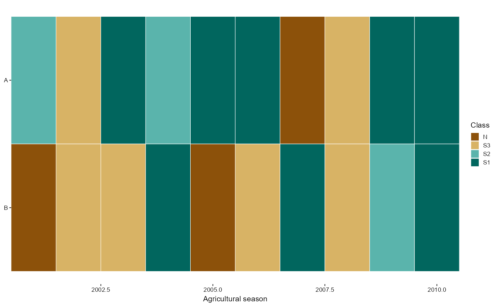

Suitability calendar (units by seasons)
Examples
set.seed(4)
e <- ensemble_from_scores(matrix(runif(20), 2, dimnames = list(c("A", "B"), NULL)),
design = data.frame(year = factor(2001:2010)))
if (requireNamespace("ggplot2", quietly = TRUE)) plot_suitability_calendar(suit_calendar(e))
